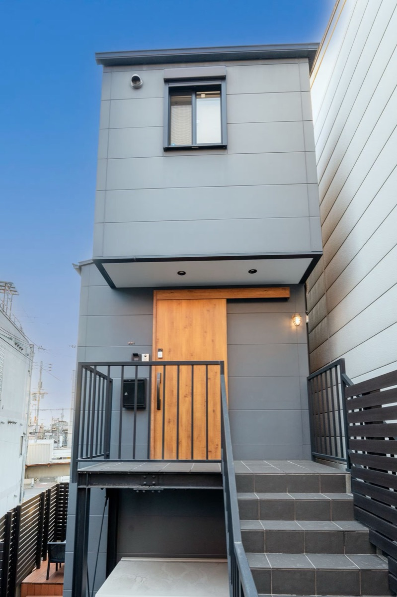
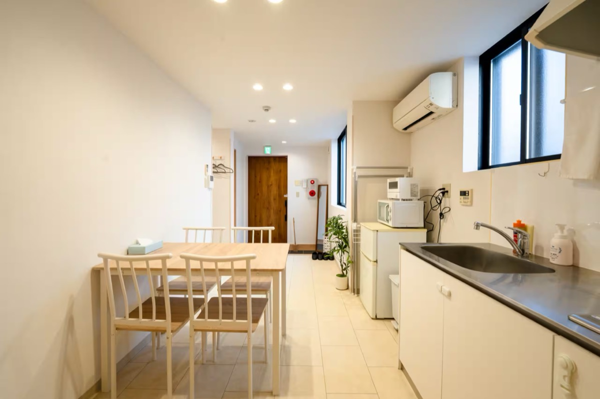
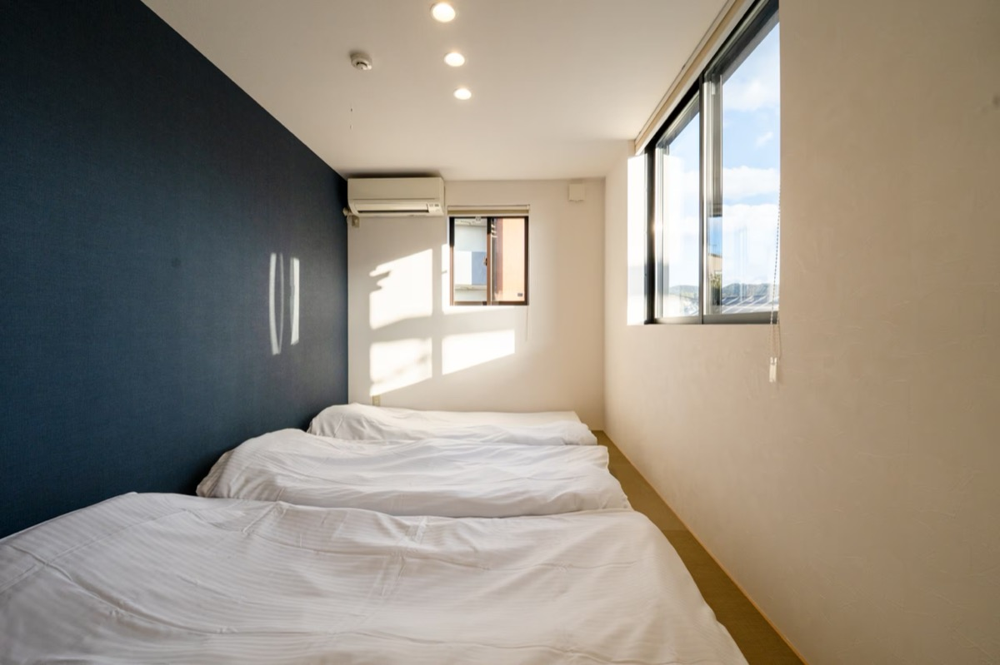
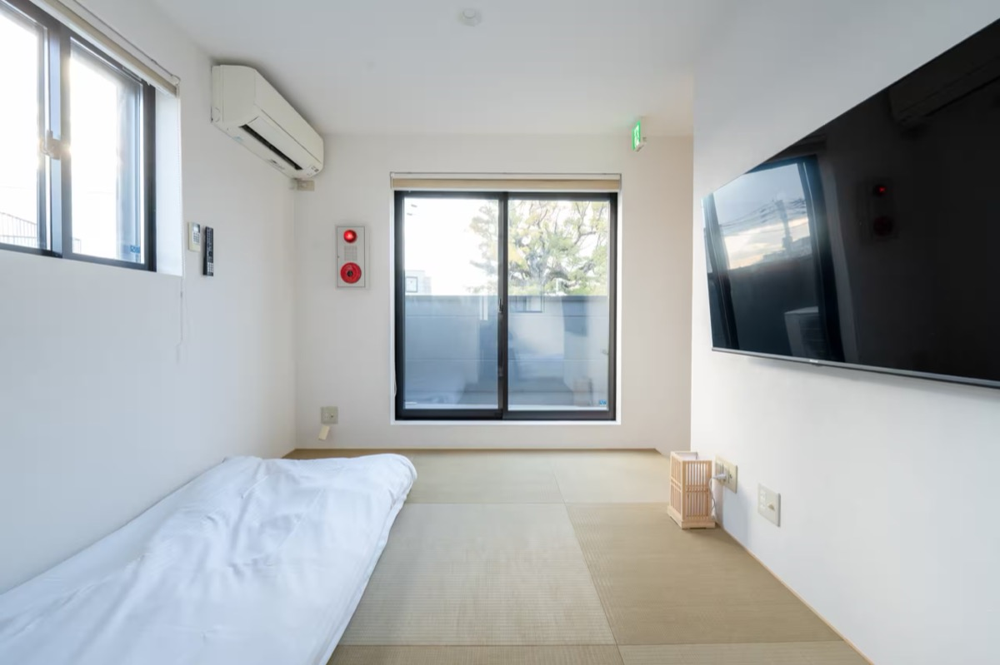

關西住宿
東山 ×4 晚 · 近江舞子 ×4 晚
東山 退房 10:00 ／ 近江舞子 退房 11:00
Hub 1 東福寺 整棟町家 京都・東山，1 站到京都站・步行到東福寺
Day 1–4（11/21–25）




- 整棟獨立、獨立衛浴——不用共用衛浴。
- 有完整廚房（含冰箱、微波、電鍋、烤麵包機），早晚餐可自理。
- 房內有洗衣機（浴室滾筒式），可自行洗衣。
- 無停車位——附近投幣式停車；Day 1–4 未取車，影響不大。
- 退房 10:00 前，比舊住宿早 1 小時，Day 5 出發前記得抓時間。
- 入住當天先告知房東抵達時間；早到可先寄放行李再出門（需向房東確認）。
Hub 2 近江舞子 正宗古民家 滋賀・琵琶湖西岸，環湖自駕據點
Day 5–8（11/25–29）


- 有廚房，晚餐可在住宿自理（超市採買）。
- 免費停車 3 台（含大車），自駕停放沒問題。
- 提供腳踏車、兒童餐椅，帶小孩友善。
- 房東已確認可 Day 9 提早自行退房（回程 11:30 班機，07:00 全體出發）。
共通規範
- 入住 15:00 — 早到先寄放行李，別逕自進房（退房：東福寺 10:00、近江舞子 11:00）。
- 安靜 — 兩間皆位於住宅區，晚上輕聲。
- 垃圾分類 — 依房東指示分類，離開前整理好。
- 室內脫鞋。
- 不多住人 — 依人數上限，不臨時加人。
- 離開前 — 關窗、關電器、垃圾處理、鑰匙依房東指示歸還。